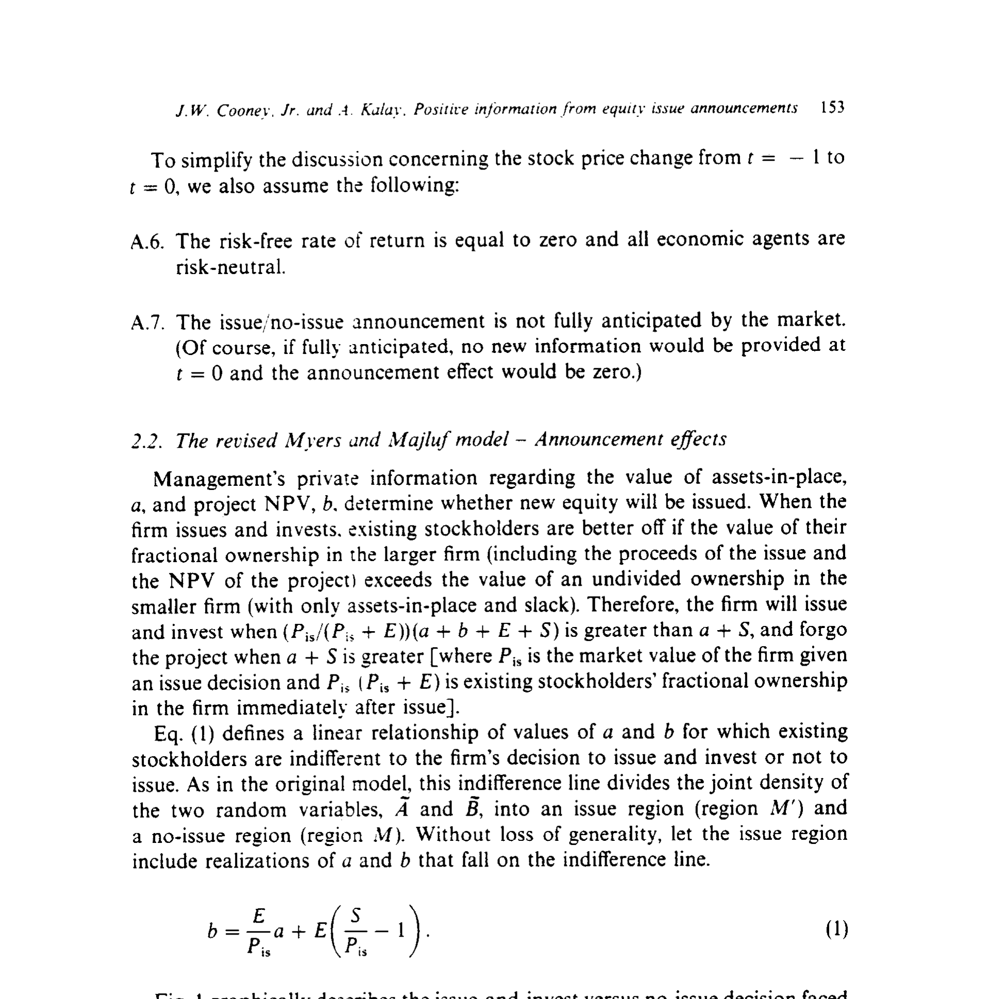
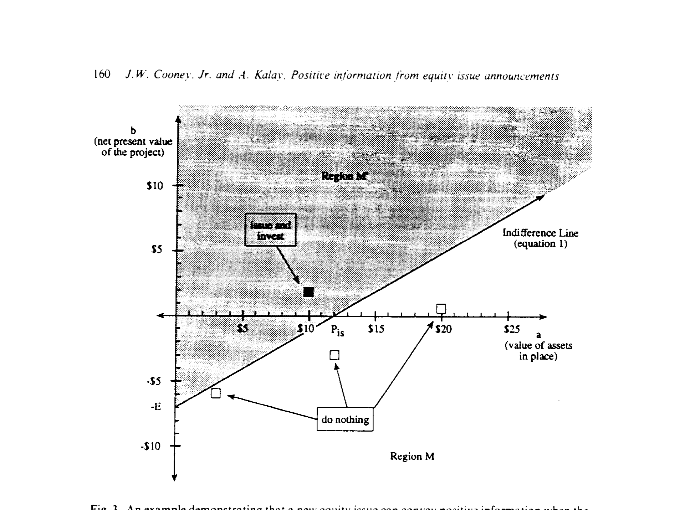
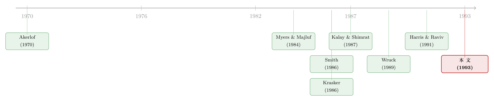

新股增发，凭什么不一定是坏消息？
本文读的是 Cooney & Kalay (1993, Journal of Financial Economics)：Myers-Majluf 那个「发新股必跌」的著名结论，并不是信息不对称的必然产物，而是他们偷偷塞进模型的一条假设——「公司面对的项目净现值非负」——的直接后果。把这条假设松开，允许公司也会碰到坏项目，模型立刻就能预测出正的增发公告效应。
1 一个被引用了一万次的结论，和它脚下的裂缝
在公司金融里，几乎没有哪篇论文比 Myers and Majluf (1984) 被引用得更勤。它讲了一个极其干净、又极其反直觉的故事：当管理层比市场更了解公司价值时，发行新股这个动作本身，就会向市场泄露一个坏消息——于是股价应声而跌。
这个预测漂亮地对上了数据。Smith (1986) 综合了一连串事件研究 (event study)，报告说工业企业在宣布公开增发时，平均有 -3.14% 的两日异常收益 (abnormal return)（公用事业是 -0.75%）。于是 Myers-Majluf 顺理成章地被供奉为「增发为什么是坏消息」的标准答案。
但故事到这里出现了第一道裂缝。
Myers-Majluf 的预测不是「平均为负」，而是一个全称命题：发新股永远不会传递正面信息。可现实偏偏给出了反例。私募配售的增发，常常伴随显著的股价上涨〔Wruck (1989)、Hertzel and Smith (1992)、Kato and Schallheim (1992)〕；Kato 和 Schallheim 还发现，日本 1980 年代的公开增发也有正的公告效应。McConnell and Muscarella (1985) 更早就发现，工业企业大多数类型的资本开支增加，都带来正收益。
于是一个自然的问题是：如果一发股票就一定是坏消息，那这些「不跌反涨」的增发，到底是模型错了，还是世界错了？
Cooney 和 Kalay 的回答既不是「模型错了」，也不是「世界错了」，而是更刁钻的一句：模型只是被偷偷限制住了。
2 真正藏在脚注里的那条假设
要看清这道裂缝，先得弄明白 Myers-Majluf 的机制到底是怎么运转的。
公司手里有两样东西：在手资产 (assets-in-place)，价值为 a；以及一个还没投的项目，其净现值 (net present value, NPV) 为 b。管理层在某一刻先于市场知道了 a 和 b 的真值。要投这个项目，需要 I 元钱；公司有一笔财务闲置 (financial slack) S，不够的部分得靠发新股募集 E = I − S。
关键在于：发新股，等于把一部分被市场低估的在手资产，按市场价「打折」卖给新股东。如果 a 被严重低估，老股东因稀释而蒙受的损失，会超过项目正 NPV 带给他们的那份收益。于是理性的管理层宁可放弃这个好项目、不发股。而「不发股」这个决定本身，就告诉市场：在手资产其实被低估了——股价于是上涨。反过来，「发股」就成了坏消息。
逻辑链条天衣无缝。但 Cooney 和 Kalay 盯住了它的起点：Myers-Majluf 假设公司面对的项目 NPV 一律非负（b ≥ 0），即把随机变量 B 从零处截断。
这条假设凭什么成立？Myers-Majluf 给的理由是：资本市场能提供无限多的「零 NPV 投资」，公司大不了把多余的钱存进资本市场。可 Cooney-Kalay 顺着这条理由往下推，反而推出了一个对 Myers-Majluf 致命的结论：
如果真有无限的零 NPV 储蓄渠道，那么公司在成立之初（此时还没有任何在手资产、无所谓低估）就该一次性发足够多的股本，把现在和将来的项目全部预先融资，多余的钱存起来。这样将来投资全靠财务闲置，永远不必再发股稀释老股东——欠投资问题根本不会出现。
换句话说，要让 Myers-Majluf 的欠投资问题成立，必须假设「把钱存进资本市场」是有成本的、是负 NPV 的（比如双重征税、对不当累积利润的惩罚税）。可一旦你承认存钱是负 NPV 的，你就没有理由再假设公司面对的项目全是非负 NPV 的——经济和技术约束会限制公司不断找到好项目的能力，但对找到坏项目的能力却毫无限制。
这就是全文的枢纽：Myers-Majluf 漏掉了一种最朴素的可能——公司不发股，可能仅仅因为它手上的项目本来就是个烂项目。而这个朴素的理由，恰恰会给「发股」这个动作反向加分。
3 修正后的模型：把坏项目请回来
Cooney 和 Kalay 把 Myers-Majluf 的经济原封不动地搬过来，只改一条假设：
- A.4（唯一的改动）：项目 NPV
B可以取正值，也可以取负值。原模型把它从零截断，修正模型不截断。
其余设定完全一致：三个时点 t = −1, 0, +1；t = −1 时管理层与市场对 A（在手资产）和 B（项目 NPV）的分布有对称认知；t = 0 时管理层私下得知真值 a、b，并决定发不发股；无税、无交易成本、风险中性 (risk-neutral)、无风险利率为零；且增发与否未被市场完全预期（否则公告日无信息、无反应）。
3.1 一条把世界劈成两半的「无差异线」
老股东什么时候愿意「发股+投资」？当他们在变大后的公司里那份按比例的所有权，超过在变小的公司里那份完整的所有权时。设 P_is 是「决定发股」条件下公司的市场价值，则老股东发股后的持股比例是 P_is/(P_is + E)。于是发股的条件是：
让上式取等号，就得到一条 a、b 的线性无差异线（论文的 eq. (1)）。它把 A 与 B 的联合密度切成两块：发行区 M' 和 不发行区 M。如图 1 所示，横轴是非负的在手资产 a，纵轴是可正可负的项目 NPV b；落在阴影区 M' 就发股投资，落在 M 就放弃项目。

Figure 1: graphically describes the issue-and-invest versus no-issue decision faced
直觉上，发行区 M' 由「项目相对值钱、在手资产相对不值钱」的组合构成；不发行区 M 则相反。这一点和原模型并无不同。真正的新东西，是图 1 里那个梯形的子区域 M_1：它在 a = 0 与 a = P_is − S 之间、且落在无差异线下方——也就是在手资产偏低、且项目 NPV 为负的那一角。M_1 正是 Myers-Majluf 被截断假设硬生生抹掉的那片天地。
3.2 市场怎么定价：三个价格，一个不等式
市场用管理层「发/不发」的决定来更新对公司价值的估计。给定发股，公司价值是发行区上的条件期望：
$$P_{is} = \bar{A}(M') + \bar{B}(M') + S$$
给定不发股，公司价值不含项目 NPV：
$$P_{no} = \bar{A}(M) + S$$
公告前的价格，则是两种情形按概率加权（π_is + π_no = 1）：
$$P_b = \pi_{is}P_{is} + \pi_{no}P_{no}$$
只要做点代数，就能得到全文最干净的判据：发股公告推高股价，当且仅当
$$P_{is} - S > \bar{A}(M)$$
反之，P_is − S < \bar{A}(M) 时公告压低股价。注意 P_is − S 恰好是图 1 里无差异线的横轴截距。于是结论可以翻译成一句几何语言：
如果子区域
M_1里有足够大的概率质量，发股就是好消息。因为这时「不发股」更可能意味着公司碰上了烂项目、且在手资产偏低——市场对「不发股」的反应是负面的；那么反过来，「发股」自然就成了利好。
3.3 为什么原模型必然得出相反的符号
把 B 截断在零（图 2，原模型），几何上会强制 P_is − S = \bar{A}(M') + \bar{B}(M') < \bar{A}(M)，于是 P_is < P_no，发股永远是坏消息。
道理也讲得通：当市场在 t = −1 就知道公司只会碰到非负 NPV 的项目时，「不发股」就只剩一个解释——管理层在主动放弃一个值钱的项目，而这只有在在手资产被严重低估时才符合老股东利益。于是不发股反而暴露了「资产被低估」，股价上涨；发股则相反。
Myers-Majluf 当然承认「发股可能意味着项目极其赚钱」。但他们的反驳是：t = −1 的公司价值早已反映了项目正 NPV 的折现期望——既然 B 被截断在零，市场本就预期会有个好项目，这份正面信息已经计入了公告前的价格。所以等到真宣布发股，「在手资产被高估」的坏消息会压倒项目那点边际好消息。
Cooney-Kalay 的反转就在这里：一旦允许 b < 0，「不发股」不再保证「资产被低估」。一个最简单的不发股理由是「项目太烂」——这不仅给了不发股一个体面的解释，更反过来给发股这个动作注入了正面信息。
这套「资本结构变动到底说了什么」的思路，和后来的纯资本结构调整文献一脉相承（关于「加杠杆」与「去杠杆」传递的信息并不对称这一点，可参见《镜子碎了：当「加杠杆」和「去杠杆」说的根本不是同一件事》）。而「公司发了股却把钱存起来」的现象，本身就是对 Myers-Majluf「财务闲置」逻辑的一次实证拷问（见《为什么公司发了股票，却把钱原封不动地存了起来？》）。
4 一个四状态的例子，把符号算给你看
抽象的不等式，不如一组数字来得有冲击力。论文给了一个极简的四状态例子，每个状态等概率（各 1/4）：
| 状态 | 在手资产 a |
项目 NPV b |
|---|---|---|
| 1 | \$3 | −\$6 |
| 2 | \$10 | \$2 |
| 3 | \$12 | −\$3 |
| 4 | \$20 | \$1 |
设 t = −1 时有 1 股流通在外，项目需 \$7 投资、全靠发新股募集（无财务闲置）。可以证明：在原模型与修正模型下，均衡发行价都是 \$12，且公司都只在状态 2 投资。也就是说，发不发股的决定、以及发行价，两个模型完全一致——唯一不同的，是市场对公告的反应。

Figure 3: An example demonstrating that a new equity issue can convey positive information when the
如图 3 所示，在修正模型下，「不发股」意味着状态 1、3 或 4，给定不发股的股价是 (3 + 12 + 20)/3 = $11.67。由于只有 25% 概率会发股，公告前价格是 0.25×12 + 0.75×11.67 = $11.75。于是发股公告带来 +\$0.25 的上涨。
而在原模型下，状态 1、3（负 NPV）被直接无视，只剩各 50% 的 [\$10, \$2] 和 [\$20, \$1]。此时「不发股」只能信号状态 4，即 \$20；50% 概率发股，公告前价格被抬到 \$16。于是同样一次发股，原模型预测 −\$4 的下跌。
同一个发行决策，同一个发行价，只因为「要不要把状态 1、3 这两个坏项目算进来」，公告效应的符号就反了过来。Cooney-Kalay 想说的正是这件事：负的平均公告效应不是信息不对称的逻辑必然，而是「假装公司从不碰坏项目」的统计假象。
5 一个意外的副产品：低值公司会主动接坏项目
修正模型还顺手解释了一个原模型里没有的行为。原模型里，高 a 的公司会欠投资——放弃正 NPV 项目以避免稀释。而在修正模型里，低 a 的公司会反过来过度投资：接受一个负 NPV 的项目，只为了借发股之机，把被低估……不，被高估的低值资产，以一个更高的「平均价」卖给新股东。
具体地，发股时老股东交出去 [1 − P_is/(P_is+E)](a + S)，换回项目 NPV 与募资中属于自己的那份 (P_is/(P_is+E))(b + E)。当 a 很低、b 只是轻微为负时，市场对公司资产的高估，足以让老股东从「发股 + 接烂项目」的组合里净赚一笔。这是 Myers-Majluf 框架里根本无法出现的图景。
6 文献脉络
这条线的源头是 Akerlof (1970) 的「柠檬市场」——信息不对称如何让好东西卖不出好价钱。Myers and Majluf (1984) 把这套逻辑搬进公司融资，给出了「发股是坏消息」的经典结论，并迅速被 Smith (1986) 等大量实证证据「证实」。
接着，一批理论工作开始寻找「发股也能是好消息」的缝隙：Krasker (1986) 在 Myers-Majluf 框架内讨论发行规模；Brennan and Kraus (1987)、Ambarish, John and Williams (1987) 则借助风险债务、股利等可观察信号让好公司自我披露；Noe (1988)、Lucas and McDonald (1990) 进一步把信号博弈做细。Harris and Raviv (1991) 那篇著名综述把这些模型尽数收入，并指出它们大多仍预测发股时股价下跌。
与此同时，实证那边的「反例」越积越多：Kalay and Shimrat (1987) 发现工业企业增发时股票与债券双双下跌，说明负面信息是主因；而 Wruck (1989)、Hertzel and Smith (1992) 则在私募配售里发现了正的公告效应。

Cooney and Kalay (1993) 在这张地图上的位置很独特：它不像 Brennan-Kraus 那样引入额外的信号工具，而是回到 Myers-Majluf 的内部，指出那个负号其实悬在一条可以松动的假设上。它修的不是机制，而是机制的前提——这也正是它的锋利之处。
后来日本市场的证据给了它额外的注脚：承销商认证如何让增发「不跌反涨」，是另一条值得对读的线索（见《承销商替你做了一道「卖出期权」的算术——日本增发为何不跌反涨》）。
7 评论与延伸（Q&A + 研究方向）
(a) 几个可能的疑问
Q：这篇文章是发现了 Myers-Majluf 的「错误」吗？
不是。Myers-Majluf 的推导没有错，错的是把一条特殊假设（项目 NPV 非负）当成了一般性结论。Cooney-Kalay 的贡献是指出：这条假设既不自洽（它和「无限零 NPV 储蓄」相互矛盾），也不现实（坏项目要多少有多少），松开它结论就变。
Q：既然只是松一条假设，为什么说它「关键」？
因为这条假设决定了那个判据
P_is − S与\bar{A}(M)的大小关系。截断b ≥ 0会几何上强制P_is − S < \bar{A}(M)，发股必然是坏消息；不截断，子区域M_1才得以存在，正的公告效应才有了来源。符号完全系于这一处。
Q：修正模型预测增发一定是好消息吗？
不。它预测的是可正可负：当项目 NPV 的不确定性足够大（坏项目的概率质量足够厚）时为正，足够小时为负。所以它和「平均为负、但横截面上有正有负」的现实是相容的，而不是把 Myers-Majluf 倒过来。
Q：那个「公司成立之初一次发足股本」的论证，是不是太理想化了？
它本就是一个归谬（reductio），不是对现实的描述。它的作用是逼出一个两难：要么承认储蓄是负 NPV 的（那就没理由只让项目非负），要么承认欠投资问题根本不成立。Myers-Majluf 必须二选一，而任一选择都通向修正模型。
Q：这是纯理论，有没有可检验的实证含义？
有，而且很直接：增发公告效应应当与项目 NPV 的不确定性（事前的离散度）正相关——不确定性越大的公司，越可能录得正反应。这给后续实证（如把成长机会、研发强度作为不确定性代理）提供了清晰的预测。
Q：为什么「确定为零 NPV」的项目会让结论崩溃？
论文在脚注里点明：若市场确知募集款将投入零 NPV 投资，柠檬问题（Akerlof, 1970）就会发作——发行价被压到在手资产的最低可能值
a_min + S，于是只有「最差」的公司才会发股。所以模型里必须保留「项目可能是正 NPV」的可能性，否则市场连发行都不会接受。
(b) 几个可能的研究问题与提案
1. 把「不确定性 → 正公告效应」做成干净的横截面检验。 【经济故事】修正模型的核心可检验含义是：项目 NPV 的事前离散度越大，增发反应越偏正。【可行性】中。需要增发样本（SDC / Compustat）+ 一个可信的「项目不确定性」代理（行业波动、隐含波动率、研发强度、分析师分歧）。难点在于不确定性代理与「市场择时」等混杂因素难以剥离，识别需要外生冲击（如行业层面的不确定性骤升事件）。
2. 把同一逻辑搬到公司债 / 混合证券发行上。 【经济故事】债券、可转债的求偿权结构不同，信息不对称落在「资产价值」上的投影也不同；修正模型预测，当发行人面对的项目可能为负 NPV 时，债券公告效应同样可能翻正。【可行性】中。TRACE 提供了增发/发债前后的债券价格，可同时观察股、债两侧反应（呼应 Kalay and Shimrat, 1987 的股债双跌）。挑战是债券流动性稀薄、公告日价格噪声大。
3. 外资持有人结构如何改变「不发股」的信息含量。
【经济故事】当公司股东以信息劣势的外资为主时，市场对「在手资产被低估/高估」的先验更分散，子区域 M_1 的质量分布可能系统性不同，公告效应的符号也随之移动。【可行性】中。需跨国增发样本 + 外资持股数据（如 FactSet/EPFR）。识别可借助指数纳入这类对外资持股的外生冲击。
4. 用结构估计反推「坏项目」的概率质量。
【经济故事】修正模型给出了 P_is、P_b、P_no 的不动点系统（论文里就是用迭代法解的）。原则上可以反过来，用观测到的发行价与公告效应，结构性地估计出 M_1 的概率质量，即「公司私下面对烂项目」的程度。【可行性】低到中。模型简洁、可数值求解，但要把它对接到真实数据，需要对 A、B 的联合分布做强假设，识别力有限，更适合作为校准 (calibration) 而非点估计。
8 我的判断
这篇论文的贡献，是理论上的一次精准爆破：它没有添置任何新机制，只是把 Myers-Majluf 那个被默认为「无害」的截断假设拎出来，证明那条人人引用的负号，其实悬在一根可以轻轻拨开的细线上。在一个被引到近乎教条的结论旁边能做出这种「祛魅」，本身就是高质量理论工作的样子——它让我们在引用「发股是坏消息」时，多了一份该有的谨慎。
我对它的保留有两点。其一，它是一个比较静态的存在性结果：它证明了「正的公告效应可能出现」，却没有给出一个能直接拿去估计的、关于何时为正何时为负的可识别预测——「不确定性足够大」里的「足够」缺乏可观测的门槛。其二，模型沿用了 Myers-Majluf 的全部强假设（风险中性、无税之外的完美市场、信息结构对称到 t=0），所以它更像是「在原作的语法里写出一个反例句」，而非一个能独立面对数据的结构框架。
我接下来最想看到的，是有人把第 (b) 节里的第一个检验认真做出来：如果增发公告效应真的随项目不确定性单调地从负走向正，那这篇 1993 年的小论文，就不只是一个理论上的反例，而是一条被数据验证过的、关于「市场到底在为什么定价」的真命题。
参考文献
- Akerlof, G. A. (1970). The Market for 'Lemons': Quality Uncertainty and the Market Mechanism. Quarterly Journal of Economics 84(3), 488–500.
- Ambarish, R., John, K., & Williams, J. (1987). Efficient Signalling with Dividends and Investments. Journal of Finance 42(2), 321–343.
- Brennan, M., & Kraus, A. (1987). Efficient Financing under Asymmetric Information. Journal of Finance 42(5), 1225–1243.
- Cooney, J. W., Jr., & Kalay, A. (1993). Positive Information from Equity Issue Announcements. Journal of Financial Economics 33(2), 149–171.
- Harris, M., & Raviv, A. (1991). The Theory of Capital Structure. Journal of Finance 46(1), 297–356.
- Kalay, A., & Shimrat, A. (1987). Firm Value and Seasoned Equity Issues: Price Pressure, Wealth Redistribution, or Negative Information. Journal of Financial Economics 19(1), 109–126.
- Krasker, W. S. (1986). Stock Price Movements in Response to Stock Issues under Asymmetric Information. Journal of Finance 41(1), 93–106.
- Lucas, D. J., & McDonald, R. L. (1990). Equity Issues and Stock Price Dynamics. Journal of Finance 45(4), 1019–1043.
- McConnell, J. J., & Muscarella, C. J. (1985). Corporate Capital Expenditure Decisions and the Market Value of the Firm. Journal of Financial Economics 14(3), 399–422.
- Myers, S. C., & Majluf, N. S. (1984). Corporate Financing and Investment Decisions When Firms Have Information That Investors Do Not Have. Journal of Financial Economics 13(2), 187–221.
- Noe, T. H. (1988). Capital Structure and Signaling Game Equilibria. Review of Financial Studies 1(4), 331–355.
- Smith, C. W., Jr. (1986). Investment Banking and the Capital Acquisition Process. Journal of Financial Economics 15(1–2), 3–29.
- Wruck, K. H. (1989). Equity Ownership Concentration and Firm Value: Evidence from Private Equity Financings. Journal of Financial Economics 23(1), 3–28.